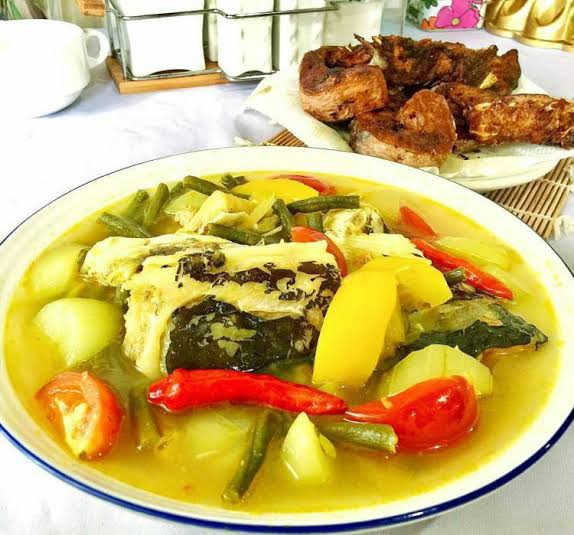

1. Soto banjar mungkin sudah sangat terkenal di banding makanan khas Kalimantan Selatan lainnya.Soto Banjar ini sebetulnya tidak jauh berbeda dengan jenis Soto pada umumnya di Indonesia, perbedaannya mungkin hanya pada kuahnya yang lebih bening. Walaupun begitu ada juga Soto Banjar yang kuahnya agak keruh.
2. Keunikan Soto Banjar dibanding jenis Soto lain di Indonesia yaitu tidak mengunakan nasi melainkan sebagai pelengkap menggunkan ketupat dan mendapatkan rasa yang lengkap bisa ditambah dengan sate.